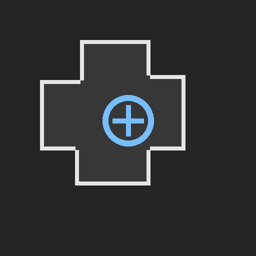

<!doctype html>
<html lang="en">
<head>
  <meta charset="utf-8">
  <meta name="viewport" content="width=device-width,initial-scale=1">
  <title>Node Editor Extension Host</title>
  <style>
    html,body,iframe{width:100%;height:100%;margin:0;border:0;display:block;overflow:hidden}
  </style>
</head>
<body>
  <iframe id="editorFrame" src="index.html" title="Node Editor"></iframe>
  <script>
    const frame = document.getElementById('editorFrame');

    frame.addEventListener('load', () => {
      const editor = frame.contentWindow;
      const factories = editor.EditorBuiltinFactories = editor.EditorBuiltinFactories || {};
      const icon = '';

      factories.test = function(ctx) {
        return {
          title: 'Test Extension',
          icon,
          render(g) {
            const page = document.createElement('div');
            page.className = 'test-extension-page';
            page.style.cssText = 'height:100%;box-sizing:border-box;display:flex;align-items:center;justify-content:center;padding:48px;overflow:auto';
            page.innerHTML = `
              <div style="max-width:760px;text-align:center">
                
                <h1 style="margin:0 0 14px;font-size:32px">Test Extension</h1>
                <p style="margin:0;color:#aaa;font-size:16px;line-height:1.6">This page is owned and rendered by the embedding page. It is registered directly through the editor's global builtin registry.</p>
              </div>`;
            g.viewBody.appendChild(page);
          }
        };
      };

      editor.EditorExtensionAPI.register({
        id: 'test',
        name: 'Test Extension',
        description: 'A test extension controlled by the embedding page.',
        icon,
        open() {
          editor.EditorApp.openBuiltin('test');
        }
      });
    });

    // The embedding page can use this global API to add/update extensions.
    window.NodeEditorExtensions = {
      get editor() { return frame.contentWindow; },
      register(extension) {
        return frame.contentWindow?.EditorExtensionAPI?.register(extension);
      },
      unregister(id) {
        return frame.contentWindow?.EditorExtensionAPI?.unregister(id);
      },
      list() {
        return frame.contentWindow?.EditorExtensionAPI?.list?.() || [];
      },
      open(id) {
        return frame.contentWindow?.EditorExtensionAPI?.open?.(id);
      }
    };
  </script>
</body>
</html>
